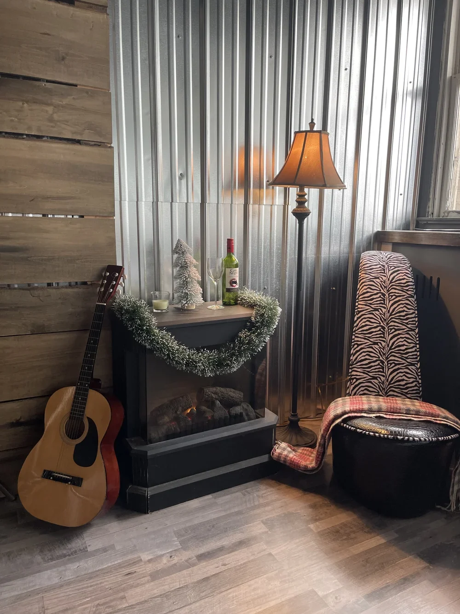
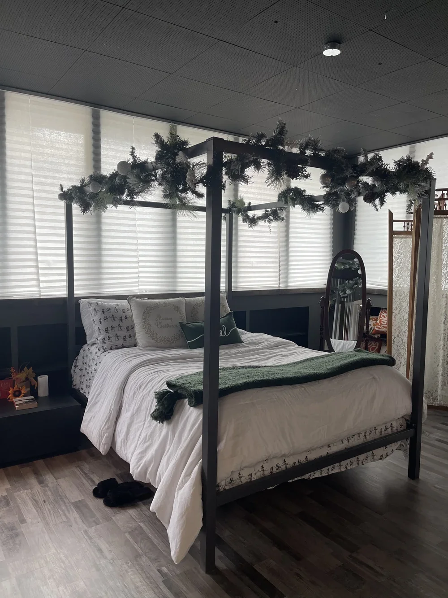
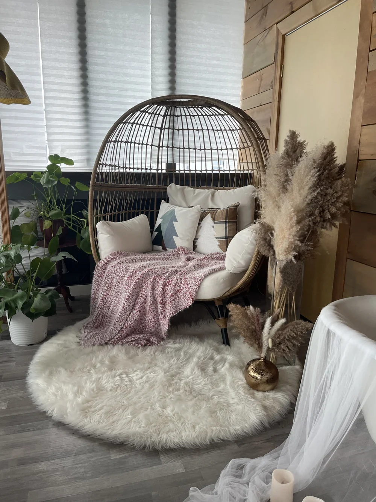
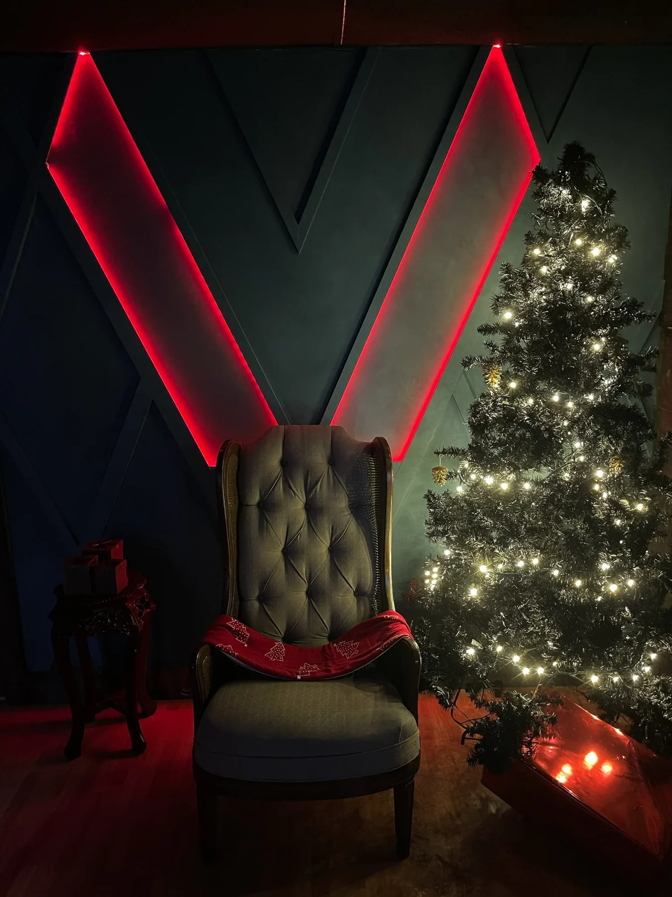

A space to create
The Passionate Eye.
Explore lighting tips & tools
Studio 1
The Victorian bedroom
A modern take on a Victorian-style bedroom with vintage details for portraits, boudoir and lifestyle photography.
- Canopy bed with two black end tables
- Clawfoot tub
- Electric fireplace
- Egg chair
- Standing mirror
- Vintage room divider

Studio 1 gallery
Soft light, old soul
A four-poster bed and filtered daylight make a versatile setting for portraits, maternity and lifestyle sessions.
Check availability
More room to create
Cozy corners
Layered textures, natural light and carefully chosen accents offer a variety of looks within the studio.
Check availability
Studio 2
The creative set
Built for creativity, with a flexible setting for photography and imaginative projects.
- Custom LED wall
- Wingback chair
- Chalkboard